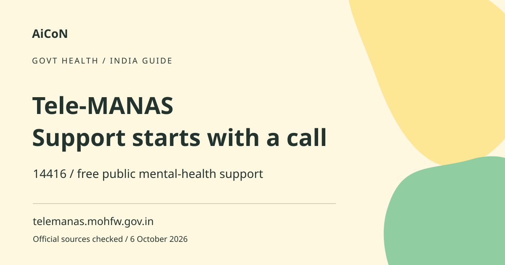

Tele-MANAS: free mental health support on 14416
Tele-MANAS is a Government of India mental-health support programme. The official helpline numbers are 14416 and 1-800-891-4416. It can offer counselling and referral support, but immediate danger requires appropriate urgent local help.

What is Tele-MANAS?
The National Tele Mental Health Programme is designed to improve access to counselling and care. The official description explains a two-tier approach involving trained counsellors, mental-health specialists and referral resources. A caller may receive initial support, specialist input or guidance towards an in-person service. It is not merely an automated chatbot.
How to use it, step by step
- Dial 14416 or 1-800-891-4416 using the numbers confirmed in the ministry announcement. Avoid a paid intermediary claiming to arrange helpline access.
- Follow the language and routing prompts. Ask for a language in which you can explain yourself comfortably.
- Tell the counsellor what is troubling you and whether you need help for yourself or are supporting someone else. Share enough relevant context without disclosing passwords or financial secrets.
- If there is immediate danger or an urgent medical need, seek appropriate local emergency assistance rather than waiting only for a routine helpline response.
- Ask questions if an instruction or referral is unclear. Confirm what service to contact and what the next step is.
- If a callback or specialist consultation is discussed, follow the official process and confirm details. Do not assume every caller is guaranteed a video slot.
- Keep any referral information somewhere private and accessible. Consider involving a trusted person with your agreement if that would help.
- For app use, follow the official portal's link and review current compatibility, privacy and language options. The helpline does not require you to first download a third-party app.
Languages and Kerala access
The February 2026 ministry update describes service in 20 languages based on choices made by States. It also says the app expanded with 10 regional languages in addition to existing languages. National totals do not guarantee every language is available at every point or time. Ask through the official service for the appropriate language route; do not promise a particular counsellor or immediate Malayalam response based only on a nationwide count.
Free public support and separate care
Official announcements describe toll-free support. A referral to another service does not by itself establish that all later medicines, tests or private treatment are free. Ask the receiving service about costs before attending non-urgent paid care. Do not pay someone claiming to unlock a free Tele-MANAS call or priority slot.
What counselling can and cannot do
A counsellor can listen, help assess needs and explain next steps. A phone call cannot replace every examination or longer-term treatment plan. The official service description says urgent in-person needs or complex evaluations may be referred for physical or audio-visual consultation. Do not treat a short interaction as a complete diagnosis or use it to stop prescribed treatment without professional advice.
If helping a family member
Ask whether they want your help and give them space to speak. Avoid presenting your interpretation as their own words. For a child, vulnerable person or someone unable to communicate independently, explain the situation accurately to the service and follow appropriate safeguarding advice. Keep their health information out of public chats.
Privacy and safe calling
Choose a setting where you can speak comfortably if possible. Be aware of who can overhear and whether the phone is shared. Do not infer absolute confidentiality or a specific recording policy from the fact that a service is public and free. Ask the service about privacy if you are unsure what is recorded or how details will be used.
When not to wait
If someone is in immediate danger, needs urgent medical attention or cannot stay safe, seek appropriate urgent local help. Tele-MANAS may guide referrals, but a remote support process is not a guarantee of an immediate response at your location. Ask a trusted nearby person for help where safe to do so rather than carrying an urgent situation alone.
Frequently asked questions
What is the number?
Official ministry guidance lists 14416 and 1-800-891-4416.
Is support free?
The helpline is described as toll-free public support; later referred care can have separate conditions.
Must I download the app first?
No. The telephone route is separate.
Can I wait on the helpline in immediate danger?
Seek appropriate urgent local assistance rather than relying only on a routine remote response.
Official sources
- Official Tele-MANAS portal
- Official service and referral description
- Ministry helpline announcement
- February 2026 programme update
Checked 6 October 2026. Expanded from an AiCoN short post delivered 5 October 2026. Portal screens and rules can change.